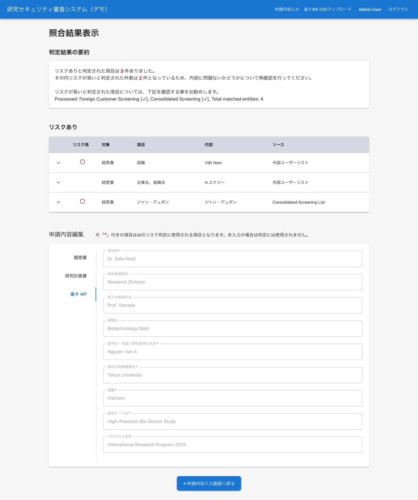

A web system that helps a university's research administration office screen incoming researchers and international collaborations. Staff upload a résumé or research plan; AI extracts and translates the content, and the system checks it against export-control and screening lists before flagging risks for human review.

Research security reviews were done by hand: staff read CVs in many languages, re-typed details, and searched screening lists one by one. The system turns that into a guided, auditable flow.
Multilingual documents, data scattered across a workflow tool, and repetitive look-ups against export-control lists.
AI reads uploaded files into structured, bilingual fields. Staff correct them, then run one risk check across all sources.
High-risk matches are highlighted with their source list, so reviewers can focus on the cases that need attention.
Two main modules, behind single sign-on.
Captured from the live demo, in the order a reviewer uses them. Click any screen to view it full size; use ← → to step through.
A feature-based React SPA, containerised and shipped through CI.
The browser app talks to one backend API, which fronts the AI extraction service, the workflow system and the screening lists. Identity comes from Keycloak over OIDC.
Details that kept a document-heavy, long-running AI flow reliable.
Axios instance with configurable retry and delay, a queue that replays requests after a token refresh, and long timeouts for AI calls with abort support.
MSW handlers mirror every endpoint, so the UI can be built and demoed without the backend — this live demo runs entirely on them.
Workflow-type schemas generate fields and required-field validation, and a flattening layer maps bilingual form state to the API request.
OIDC login, callback handling, session restore on load and background token-expiry checks, behind protected routes.
Vendor code split into stable chunks (React, UI, forms, auth, i18n) for better caching across releases.
Multi-stage Docker image served by Nginx, built and deployed through Jenkins pipelines for staging and production.